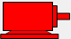
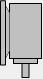
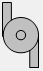
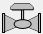
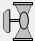

ISO symbols are recommended to represent your common plant equipment to promote pattern recognition, since these simple obvious shapes are easy to recognise immediately without needing any labeling.
Also any labeling that is added for your plant equipment should not be intrusive (highly visible) as they only serve to distract your operators from other more important information.
IMPORTANT: Move away from labeling every item of equipment with their tag names or point IDs as these are NOT important and only add unnecessary visual clutter and .
Furthermore muted colors should ideally be used by these plant equipment representations to indicate whether they are started or stopped.
Previously it was common to use green to indicate the started state and red to indicate the stopped state. While these colors were visually appealing they only served to increase the mental fatigue of the operators and especially the red stopped state would distract them any alarm conditions that they actually do need to pay immediate attention to. For this reason these ISO shapes indicate the following states by changing the fill color of the shape accordingly:

Purpose: to represent any kind of motor and indicate whether this motor is started (on) or stopped (off) or in an alarm state.
Description: the ISO representation of a motor in either a horizontal or vertical

orientation, which indicates the status of its Boolean process variable (PV) that indicates whether this motor is started (on) or stopped (off) and/or indicates when a specific alarm or "wrong" state is in effect, by changing its background color as described above.wzdMotorHorizontal_v01: the ISO representation of a motor in a horizontal orientation.
wzdMotorVertical_v01: the ISO representation of a motor in a vertical orientation.
Required values:
Note: When this wizard is added to a graphic form, all these values are MANDATORY and therefore must ALL be specified.
Tip: These values are listed in the order they are specified in the wizard.
Purpose: to represent any kind of pump or fan and indicate whether this pump or fan is started (on) or stopped (off) or in an alarm state.
Description: the ISO representation of a pump or fan in either a horizontal or vertical

orientation, which indicates the status of its Boolean process variable (PV) that indicates whether this pump or fan is started (on) or stopped (off) and/or indicates when a specific alarm or "wrong" state is in effect, by changing its background color as described above.wzdPumpHorizontal_v01: the ISO representation of a pump or fan in a horizontal orientation.
wzdPumpVertical_v01: the ISO representation of a pump or fan in a vertical orientation.
Required values:
Note: When this wizard is added to a graphic form, all these values are MANDATORY and therefore must ALL be specified.
Tip: These values are listed in the order they are specified in the wizard.
Purpose: to represent any kind of valve and indicate whether this valve is started (on) or stopped (off) or in an alarm state.
Description: the ISO representation of a valve in either a horizontal

or vertical
orientation, which indicates the status of its Boolean process variable (PV) that indicates whether this valve is started (on) or stopped (off) and/or indicates when a specific alarm or "wrong" state is in effect, by changing its background color as described above.wzdValveHorizontal_v01: the ISO representation of a valve in a horizontal orientation.
wzdValveVertical_v01: the ISO representation of a valve in a vertical orientation.
Required values:
Note: When this wizard is added to a graphic form, all these values are MANDATORY and therefore must ALL be specified.
Tip: These values are listed in the order they are specified in the wizard.